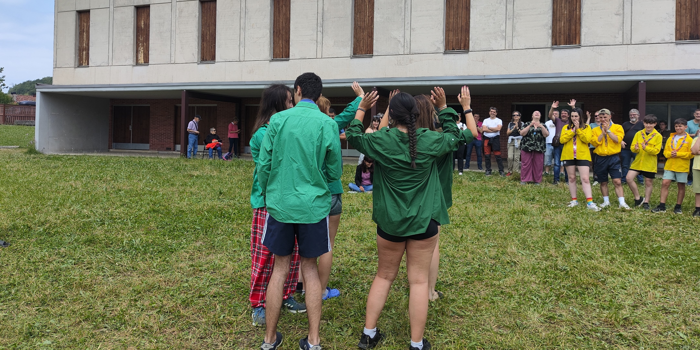
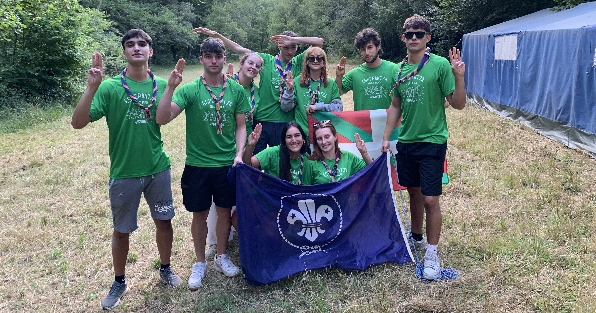
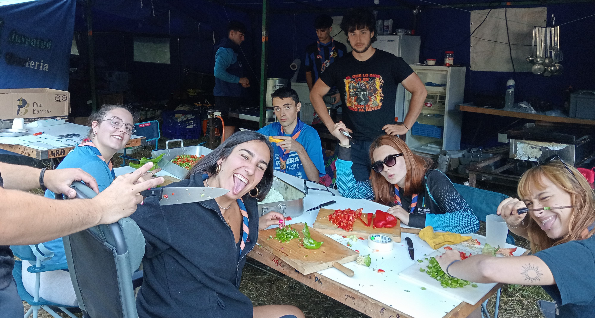
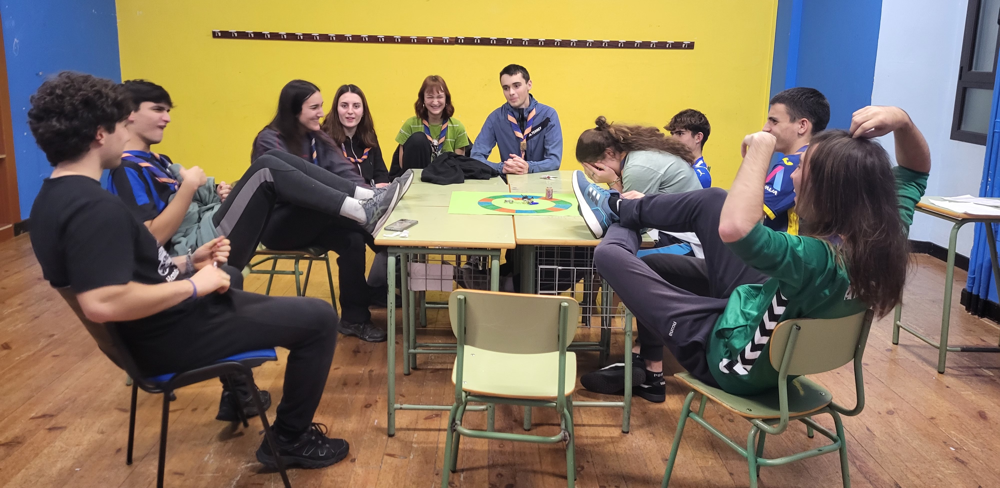
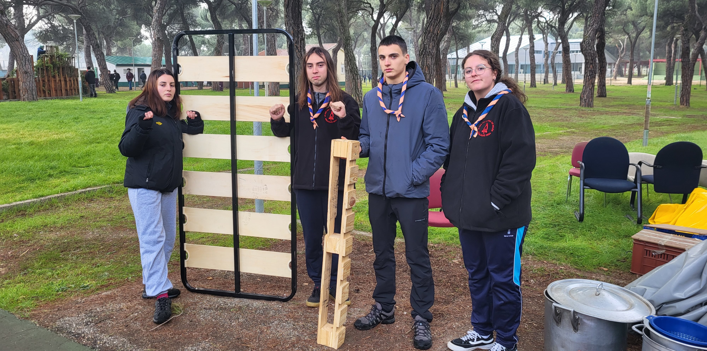
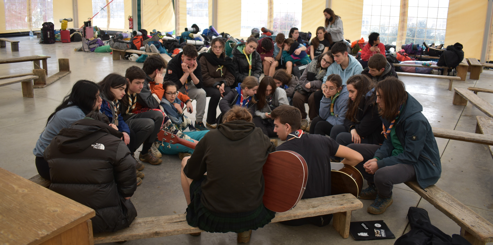
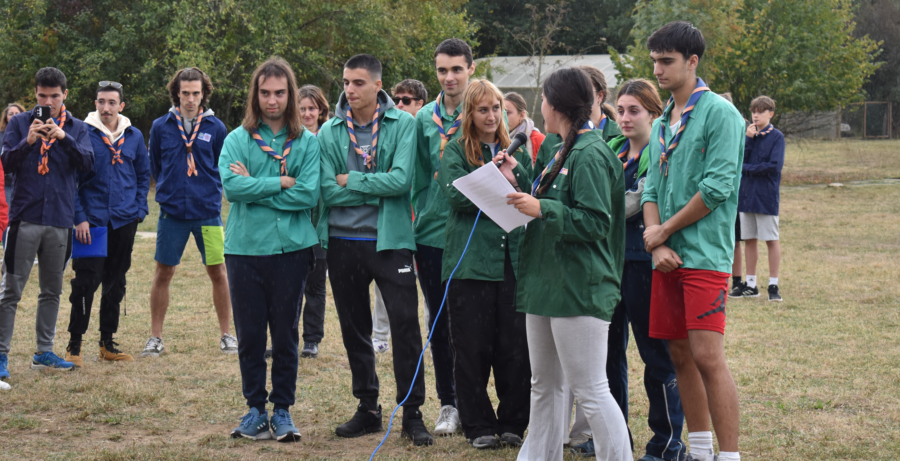

El momento de elegir quién eres, qué quieres y cómo vas a dejar huella.

La etapa de Rutas (Trebeak en euskera) es el final del recorrido scout. Un tiempo para tomar decisiones, asumir responsabilidades y empezar a construir tu propio camino en la vida, desde el compromiso y la libertad.

El Clan es el lugar donde compartir el camino. Un grupo donde apoyarse, debatir, decidir y crecer juntos, creando vínculos reales basados en la confianza y la responsabilidad compartida.

Los animadores están para acompañar, no para decidir por ti. Escuchan, orientan y ayudan en tu proceso personal, dejando espacio para que seas protagonista de tu propio camino.

A través del Proyecto Personal de Vida (PPV), cada ruta reflexiona sobre quién es y qué quiere ser. Es una herramienta para tomar decisiones conscientes y orientar tu vida hacia un compromiso real.

El servicio es el centro de esta rama. A través de acciones reales y campos de trabajo, los jóvenes se implican en la sociedad, conocen otras realidades y trabajan activamente para mejorarlas.

Experiencias como Taizé o la Luz de la Paz de Belén permiten vivir la espiritualidad desde el encuentro, el silencio y la comunidad, conectando con jóvenes de todo el mundo y compartiendo valores de paz y fraternidad.

Al final de la etapa Ruta, se abre una nueva puerta: formar parte del Kraal; acompañar los más jóvenes en su propia aventura scout y devolver el tiempo que nos regalaron a nosotros.